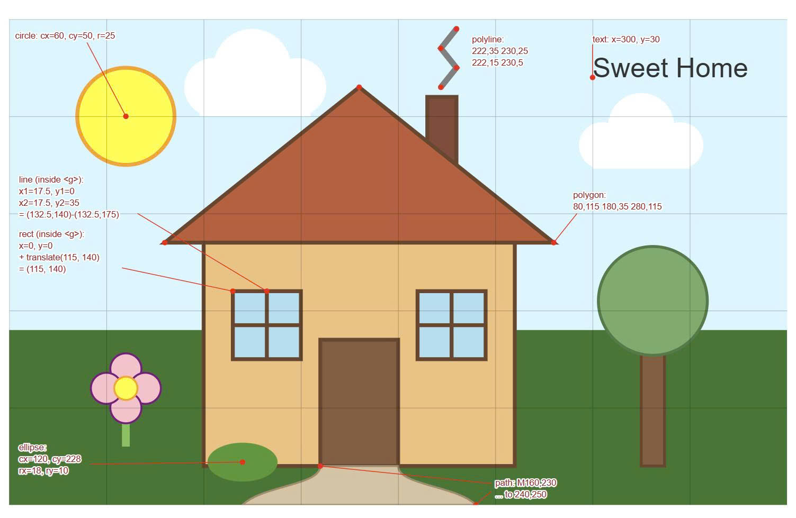
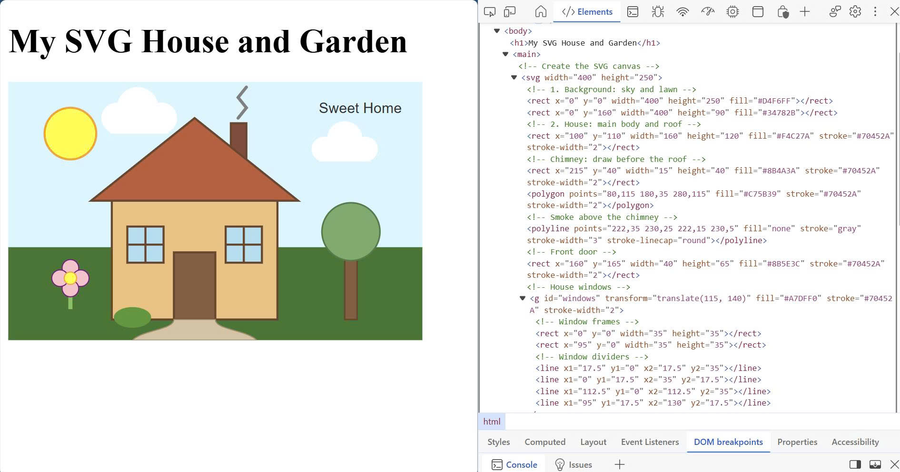

My SVG House and Garden
Sweet Home
circle: cx=60, cy=50, r=25
line (inside <g>):
x1=17.5, y1=0
x2=17.5, y2=35
= (132.5,140)-(132.5,175)
rect (inside <g>):
x=0, y=0
+ translate(115, 140)
= (115, 140)
ellipse:
cx=120, cy=228
rx=18, ry=10
polygon:
80,115 180,35 280,115
polyline:
222,35 230,25
222,15 230,5
path: M160,230
... to 240,250
text: x=300, y=30
Coordinates of each shape

The SVG in the DOM
